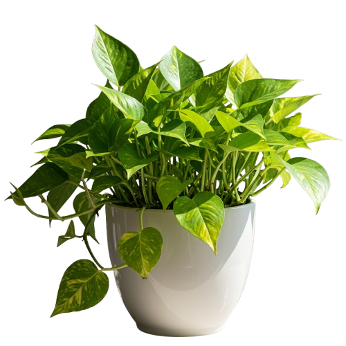
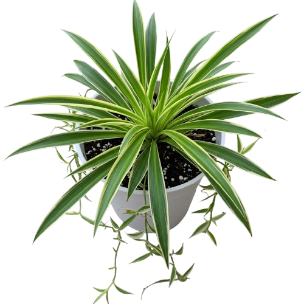

Sansevieria
(Lingua di suocera)

Zamioculcas zamiifolia
(Pianta di Zanzibar)

Pothos
(Epipremnum aureum)

Chlorophytum comosum
(Falangio)
il segreto delle piante
"SEI UN 'KILLER DI PIANTE'? NON PREOCCUPARTI, TI CAPIAMO!
MA ABBIAMO UNA BUONA NOTIZIA: ESISTONO PIANTE CHE SOPRAVVIVONO ANCHE AI POLLICI NERI PIÙ OSTAANTI."
SCOPRI LA NOSTRA SELEZIONE DI PIANTE INDISTRUTTIBILI E TRASFORMA LA TUA CASA IN UNA GIUNGLA URBANA... SENZA IL MINIMO SFORZO!"